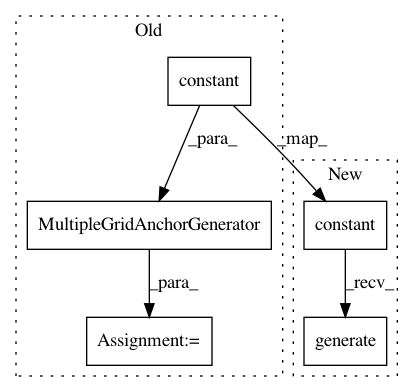

5556579376519853b41b54227759d2ee9f7d042c,research/object_detection/anchor_generators/multiple_grid_anchor_generator_test.py,MultipleGridAnchorGeneratorTest,test_invalid_generate_arguments,#MultipleGridAnchorGeneratorTest#,183
Before Change
ag.MultipleGridAnchorGenerator(box_specs_list)
def test_invalid_generate_arguments(self):
base_anchor_size = tf.constant([1.0, 1.0], dtype=tf.float32)
box_specs_list = [[(1.0, 1.0), (2.0, 1.0), (1.0, 0.5)],
[(1.0, 1.0), (1.0, 0.5)]]
anchor_generator = ag.MultipleGridAnchorGenerator(
box_specs_list, base_anchor_size)
// incompatible lengths with box_specs_list
with self.assertRaises(ValueError):
anchor_generator.generate(feature_map_shape_list=[(4, 4), (2, 2)],
After Change
with self.assertRaises(ValueError):
anchor_generator = ag.MultipleGridAnchorGenerator(
box_specs_list,
base_anchor_size=tf.constant([1.0, 1.0], dtype=tf.float32),
anchor_strides=[(.25, .25)],
anchor_offsets=[(.125, .125), (.25, .25)])
anchor_generator.generate(feature_map_shape_list=[(4, 4), (2, 2)])
with self.assertRaises(ValueError):
anchor_generator = ag.MultipleGridAnchorGenerator(
box_specs_list,
base_anchor_size=tf.constant([1.0, 1.0], dtype=tf.float32),
In pattern: SUPERPATTERN
Frequency: 4
Non-data size: 5
Instances
Project Name: tensorflow/models
Commit Name: 5556579376519853b41b54227759d2ee9f7d042c
Time: 2017-11-07
Author: rathodv@google.com
File Name: research/object_detection/anchor_generators/multiple_grid_anchor_generator_test.py
Class Name: MultipleGridAnchorGeneratorTest
Method Name: test_invalid_generate_arguments
Project Name: tensorflow/models
Commit Name: 5556579376519853b41b54227759d2ee9f7d042c
Time: 2017-11-07
Author: rathodv@google.com
File Name: research/object_detection/anchor_generators/multiple_grid_anchor_generator_test.py
Class Name: MultipleGridAnchorGeneratorTest
Method Name: test_construct_multiple_grids
Project Name: tensorflow/models
Commit Name: 5556579376519853b41b54227759d2ee9f7d042c
Time: 2017-11-07
Author: rathodv@google.com
File Name: research/object_detection/anchor_generators/multiple_grid_anchor_generator_test.py
Class Name: MultipleGridAnchorGeneratorTest
Method Name: test_construct_single_anchor_grid
Project Name: tensorflow/models
Commit Name: 5556579376519853b41b54227759d2ee9f7d042c
Time: 2017-11-07
Author: rathodv@google.com
File Name: research/object_detection/anchor_generators/multiple_grid_anchor_generator_test.py
Class Name: MultipleGridAnchorGeneratorTest
Method Name: test_construct_anchor_grid